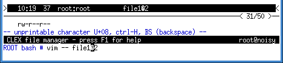

Table of Contents
Basic editing functions
Move cursor
| <left> | character left |
| <right> | character right |
| <home> | move to the beginning of the line |
| <end> | move to the end of the line |
| alt-B or shift-<left> or ctrl-<left> |
word left (back) |
| alt-F or shift-<right> or ctrl-<right> |
word right (forward) |
| <esc> <up> or ctrl-<up> |
line up |
| <esc> <down> or ctrl-<down> |
line down |
Some key combinations from the list above may be unsupported or not available on some systems.
Delete
| <del> | delete character under the cursor |
| alt-D | delete word at the cursor |
| <backspace> or ctrl-H | delete character to the left the cursor |
| ctrl-K | delete to end of line |
| ctrl-U | delete entire line |
Insert
All regular text that you type is inserted, there is no overtype mode.
In order to insert a control character that has a function in the program
(e.g. ctrl-C = exit panel) press ctrl-V before the character:
| ctrl-V <X> | insert the character X |
In order to insert characters by their codes press alt-I and follow these
instructions.
Undo and redo
| ctrl-Z or alt-ctrl-Y |
undo (reverse the last insert or delete operation) |
| ctrl-Y or alt-ctrl-Z |
redo (revert to the state before undo) |
Miscellaneous
| alt-T |
transform character case (upper to lower and vice versa) |
Notes:
-
The edit functions treat every space as a word separator.
-
Unprintable characters in the input line are displayed as highlighted question marks.
If you put the cursor over such character, you can see its numeric value.

-
Filenames containing unprintable characters can be renamed using the
internal rename function alt-R.